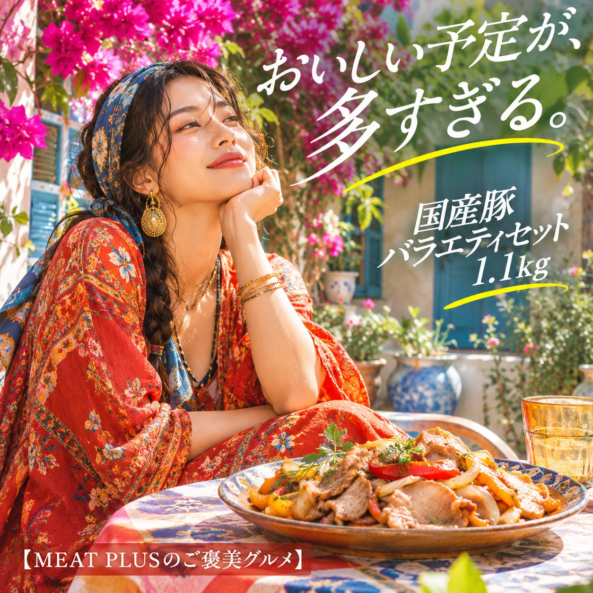
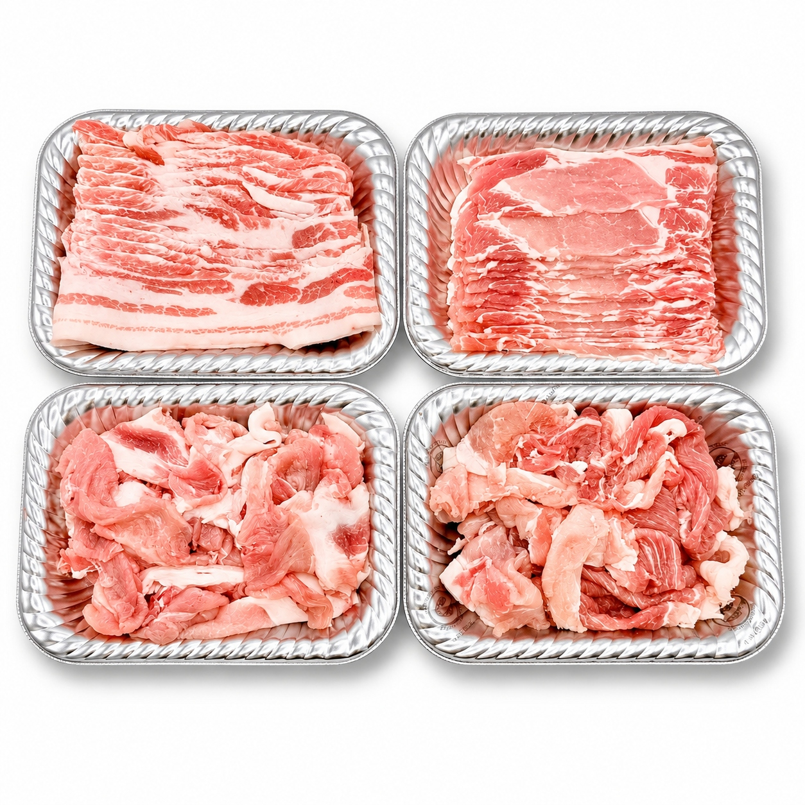

SCENE 01

b 豚肉
【毎日の食卓に活躍！国産豚肉3種類、合計1.1kgの便利なセット。】
国産の豚肉を3種類詰め合わせた、合計1.1kgの「国産豚バラエティセット」です。豚ローススライス、豚バラスライス、豚コマ切れ肉がセットになっており、様々なお料理にお使いいただけます。 セット内容は、使いやすい「豚ローススライス」250g、程よい脂身が特徴の「豚バラスライス」250g、そして炒め物や煮物に便利な「豚コマ切れ」300g×2パックです。コマ切れは小分けになっているため、必要な分だけ使いやすく、毎日の献立作りをサポートします。 ローススライスは生姜焼きやポークチャップに、バラスライスは豚丼や鍋物、野菜の肉巻きなどに。コマ切れは野菜炒めや豚汁、カレーなど、幅広いメニューへのご活用を提案します。ご家庭の定番料理に合わせて、それぞれの部位をお楽しみください。 商品はご家庭の冷凍庫で保存いただけます。賞味期限は発送日から3ヶ月です。毎日の食卓に、便利な国産豚肉セットをぜひご活用ください。
公式サイトへ移動します。価格・在庫・配送条件は移動先で最終確認してください。

PRODUCT INFORMATION
豚ロース（国内産）、豚バラ（国内産）、豚肩（国内産）、豚もも（国内産）
FAQ
掲載の商品規格は「1.1ｋｇ（豚ローススライス：250ｇ、豚バラスライス：250ｇ、豚コマ：300ｇ×2ｐ）」です。選択できる内容とご注文時の詳細は商品ページでご確認ください。
保存方法は「冷凍」です。賞味期限は「発送日より3ヶ月」です。
MEAT PLUS OFFICIAL SHOP
仕入れ・加工・梱包・発送まで自社で行うMEAT PLUSの公式オンラインショップでご注文いただけます。
公式オンラインショップで購入する国産豚バラエティセット。商品規格：1.1ｋｇ（豚ローススライス：250ｇ、豚バラスライス：250ｇ、豚コマ：300ｇ×2ｐ）。保存方法：冷凍。原産国：日本。製造地：日本。賞味期限：発送日より3ヶ月。
価格・在庫・配送日・送料・ギフト対応は、公式通販の商品ページで最新情報をご確認ください。